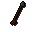
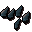
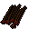
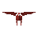
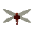
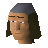

Rune arrow

| Config name | rune_arrow |
| Item id | 892 |
| Value | 400 gp |
| Weight | 16g |
| Members | Yes |
| Tradeable | Yes |
| Stackable | Yes |
| Equip slot | quiver |
| Options | Wield |
| Category | arrows |
| Level required | 40 |
| Defined in | scripts/skill_combat/configs/ranged/arrows.obj |
| Equipment stats | Ranged str 49 |
Rune arrow
Arrows with Rune heads.
How to make
| Skill | Level | XP | Ingredients | Tool | How | Where | Makes |
|---|---|---|---|---|---|---|---|
| Fletching | 75 | 12.5 |  Rune arrowtips ×15, Headless arrow ×15 | use on item | ×15 |
Dropped by
| NPC | Level | Quantity | Rarity | Via | Notes |
|---|---|---|---|---|---|
 Red dragon | 152 | 4 | 1/16 (6.25%) | ||
| 86 | 12 | 5/128 (3.91%) | |||
 Kalphite Queen | 333 | 100 | 1/64 (1.56%) | ||
| 276 | 42 | 1/1024 (0.1%) | Ultra-rare drop table table | ||
| 227 | 42 | 1/4096 (0.02%) | Ultra-rare drop table table | ||
| 172 | 42 | 1/8192 (0.01%) | Ultra-rare drop table table | ||
| 86 | 42 | 1/8192 (0.01%) | Ultra-rare drop table table | ||
| 141 | 42 | 1/8192 (0.01%) | Ultra-rare drop table table | ||
| 141 | 42 | 1/8192 (0.01%) | Ultra-rare drop table table |
In drop tables
Sold at
| Shop | Shopkeeper | Stock |
|---|---|---|
| Hicktons Archery Emporium. | 0 | |
| Dargaud's Bow and Arrows. |  Bow and Arrow salesman | 400 |
Quests
Referenced in scripts
scripts/_test/scripts/cheats/cheat_bank.rs2scripts/_test/scripts/debug/debug_quests.rs2scripts/_test/scripts/debug/debug_specs.rs2scripts/drop tables/scripts/fire_giant.rs2scripts/drop tables/scripts/kalphite_queen.rs2scripts/drop tables/scripts/red_dragon.rs2scripts/drop tables/scripts/shared_droptables.rs2scripts/minigames/game_ranging/scripts/ticket_merchant.rs2scripts/quests/quest_upass/scripts/upass_bridge.rs2